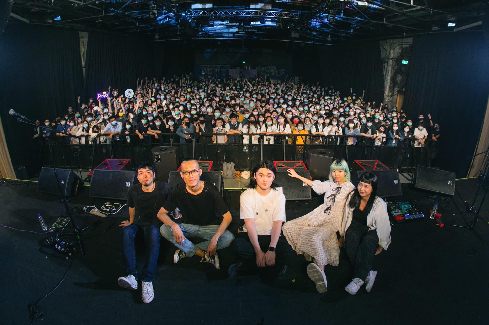

位於華山文化園區內的Legacy自2009年12月成立至今，佔地225坪的展演空間寬敞又舒適，能容納粗估1200的人數，擁有國內各大音樂節、唱片公司的實務經驗。用心的節目規畫及空間設計，讓觀眾能有近距離的音樂體驗，也使表演者都能得到最好的設備與支持。
除了邀請各種重量級的國內外藝人，從2010年開始舉辦的「The Next Big Thing大團誕生」，更是給予許多獨立樂團表演及發揮的空間，降低新興音樂人踏進專業演出的門檻，取得初步進入市場的機會。
Legacy以系列節目企劃著稱，結合不同的音樂角度與面向，推動台灣音樂生活型態的脈動。像是2010開始至今每年舉辦的「都市女聲」，每年邀請六位不同的女聲類型，以及2017開始的「鐵漢柔情」系列，由六組風格迥異的音樂男聲站上Legacy舞台，不同音樂曲風，用自己獨特的方式去詮釋這一切。
不是所有歌手都能有足夠的觀眾能量到小巨蛋演出，不同類型的藝人需要更彈性的演出空間，而Legacy2013年為服務初試啼聲的音樂人及另類性音樂發展，成立Legacy mini，與意舍amba聯名合作，進駐台北市西門町。2014年Legacy台中開幕，對於台灣中南部區域的音樂人提供特別企劃及舉辦演出。2017年Legacy與新光三越攜手合作打造展演空間信義劇場Legacy Max，是信義區最大最完整的展演空間。
地址: 台北市中正區八德路一段1號華山1914創意文化園區中5A館
只要於捷運板南線(藍線)的忠孝新生站及善導寺站下車，再步行三至五分鐘就到了!非常便利!
其他文章...
1 / 9

永豐Legacy Taipei 傳音樂展演空間
2 / 9

The Wall Live House
3 / 9

西門河岸留言
4 / 9

小地方
5 / 9

Revolver
6 / 9

Pipe Live Music
7 / 9

WITCH HOUSE 女巫店
8 / 9

三創Clapper Studio
9 / 9

海邊的卡夫卡